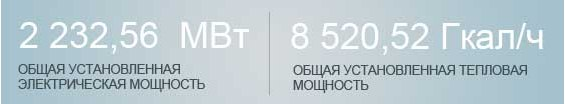

.png) О компании:
О компании:
Публичное акционерное общество «Территориальная генерирующая компания №2» (ПАО «ТГК-2») создано в апреле
2005 года. ПАО «ТГК-2» является одной из крупнейших тqеплоэнергетических компаний Северо-Западного и Центрального
федеральных округов России. ПАО «ТГК-2» занимается производством электрической и тепловой энергии и реализацией тепла
(пара и горячей воды) потребителям. Предприятия компании расположены в Архангельской, Вологодской, Костромской,
Новгородской и Ярославской областях РФ.

Производственные активы ТГК-2 включают в себя:
- 11 ТЭЦ
- 5 котельных
- 4 предприятия тепловых сетей
Численность сотрудников компании: около 5000 специалистов
Миссия ПАО «ТГК-2»
Содействие социально-экономическому развитию регионов через надежное и бесперебойное снабжение
тепловой и электрической энергией. Мы работаем на благосостояние и интересы наших акционеров,
потребителей, работников, партнеров и общества.
Стратегическая цель ПАО «ТГК-2»
Рост капитализации и инвестиционной привлекательности компании.